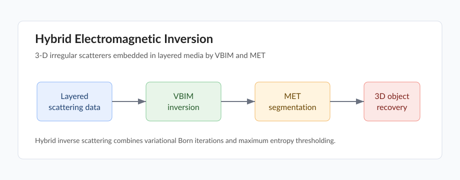

Hybrid Electromagnetic Inversion of 3-D Irregular Scatterers Embedded in Layered Media by VBIM and MET
IEEE Transactions on Antennas and Propagation, JCR-Q1
Xianliang Huang, Jiawen Li, Yanjin Chen, Feng Han, Qinghuo Liu
Paper PDF DOI Code pending Video pending

Overview
This work studies electromagnetic inversion of 3D irregular scatterers in layered media. It combines VBIM and MET to recover anisotropic 3D objects under layered-medium conditions, connecting inverse scattering with machine-learning-based maximum entropy thresholding.
Highlights
- Hybrid inversion framework for irregular 3D scatterers in layered media.
- Combination of variational Born iterative method and maximum entropy thresholding.
- Application to anisotropic object reconstruction under layered-medium scattering.
Citation
@article{huang2020hybrid,
title={Hybrid Electromagnetic Inversion of 3-D Irregular Scatterers Embedded in Layered Media by VBIM and MET},
author={Huang, Xianliang and Li, Jiawen and Chen, Yanjin and Han, Feng and Liu, Qing Huo},
journal={IEEE Transactions on Antennas and Propagation},
volume={68},
number={12},
pages={8238--8243},
year={2020},
doi={10.1109/TAP.2020.2985156}
}